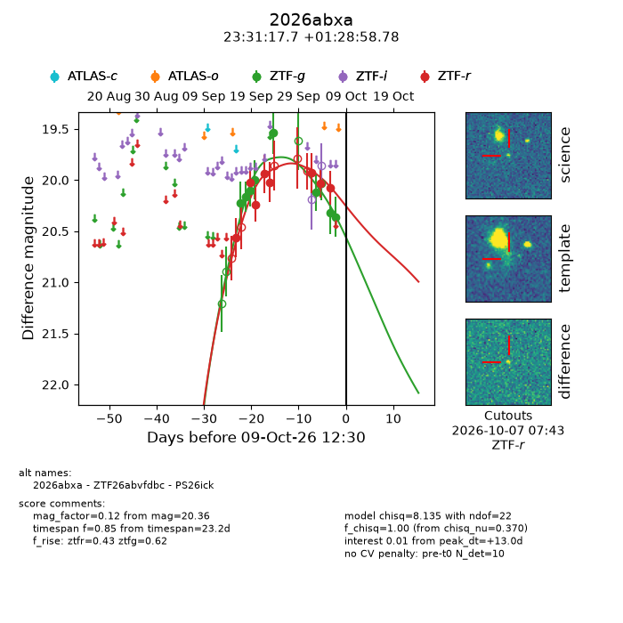
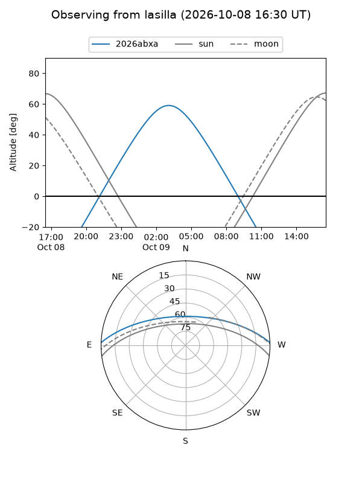
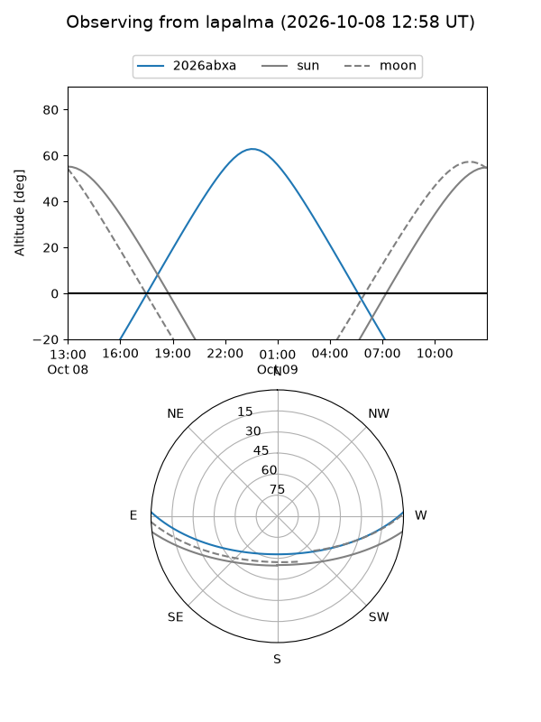
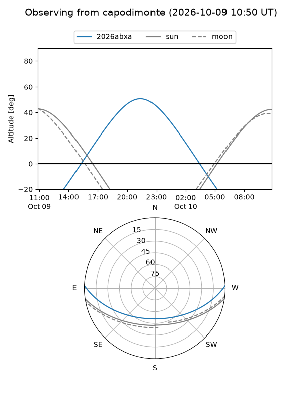
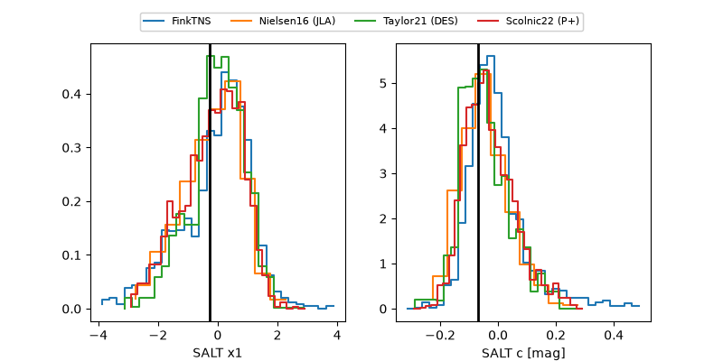

2026abxa
Target 2026abxa at 2026-10-09 12:32
Aliases and brokers:
FINK-ZTF: ztf.fink-portal.org/ZTF26abvfdbc
Lasair-ZTF: lasair-ztf.lsst.ac.uk/objects/ZTF26abvfdbc
ALeRCE-ZTF: alerce.online/object/ZTF26abvfdbc
YSE-PZ: ziggy.ucolick.org/yse/transient_detail/2026abxa
TNS name: wis-tns.org/object/2026abxa
Direct TNS query: direct search
alt names
ZTF26abvfdbc (ztf,fink_ztf)
2026abxa (tns,yse)
PS26ick (panstarrs)
Coordinates:
equatorial (ra, dec) = 352.8236,+1.48299
equatorial (HMS+DMS) = 23:31:17.67,+01:28:58.78
galactic (l, b) = (85.7355,-55.49164)
Flags:
peak dt: +13.0
Photometry:
last ztfg=20.36, ztfr=20.07
9 ztfg, 8 ztfr detections
Lightcurve

Visibility



Additional plots
